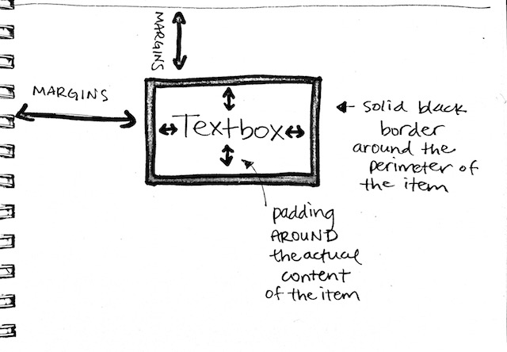

Rachel Yisle Lim

Email me
The way every item is displayed on a web page can be manipulated by changing its borders, margins, and padding. Each of these are what we call a property. Properties, in general, are options for how an item can be displayed. For example, the background color of a box is a property; the font-size of the text in a paragraph is a property. In the same way, borders, margins, and padding are all properties.
A border is the easiest property to understand. It is essentially the outline of the object. So when I have some text, I can put a border around the perimeter of the text box. You can adjust the color of the border, the thickness, and the style (dashed or solid). In short, borders border along the perimeter of the item.
Margins, are so subtly similar and yet very different. A margin too affects the edges of the item, like the border. However, unlike the border, which touches the perimeter/edge of the item, the margins affect the space AROUND the OUTSIDE of the item. It affects how much space there will be between the item and another item near it. Items without margins can have other items invading its space. If you don’t want any of that happening, add a margin!
Padding is a new concept I never knew about. Unlike margins and borders, which affect the outside of the item, padding affects the INSIDE of the item. For example, if I add padding to text, it will create a sort of margin between the text/content itself and the perimeter of the box in which the text is written. In other words, padding affects the space AROUND the actual content of the item.
Below is an illustration of these concepts. Hopefully you understand the difference between the three. They’re subtle, but it’s all about the details!
